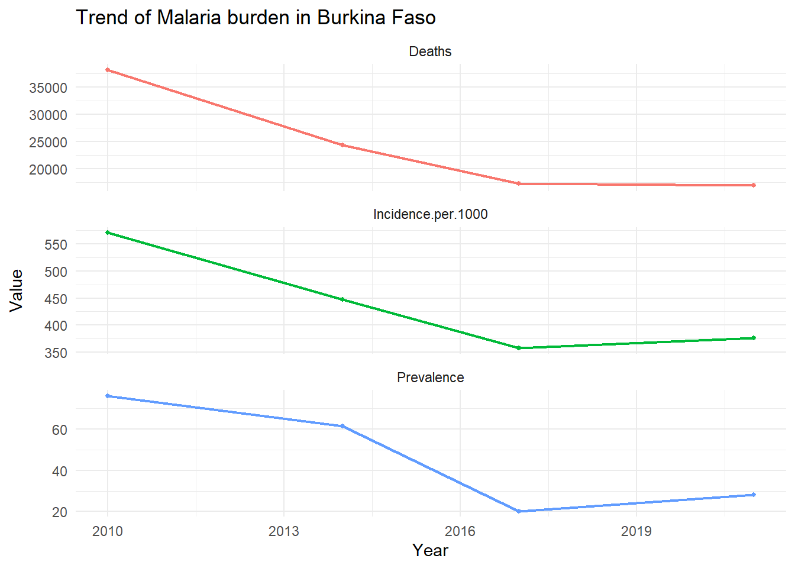
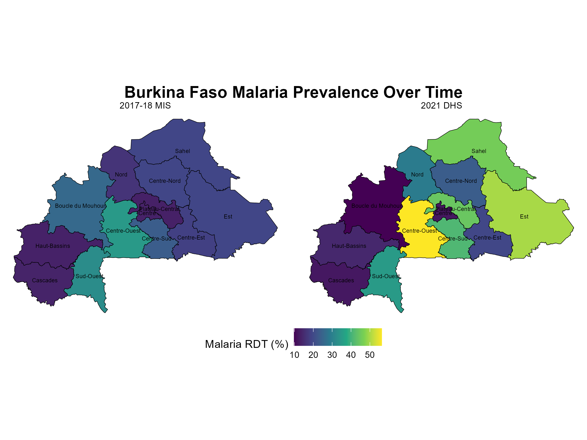
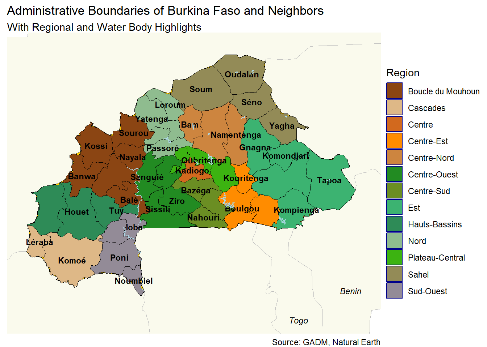
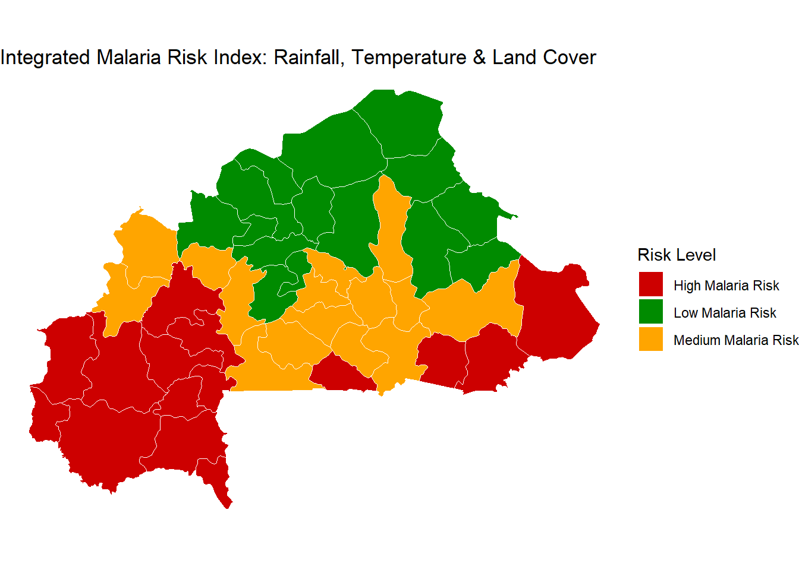
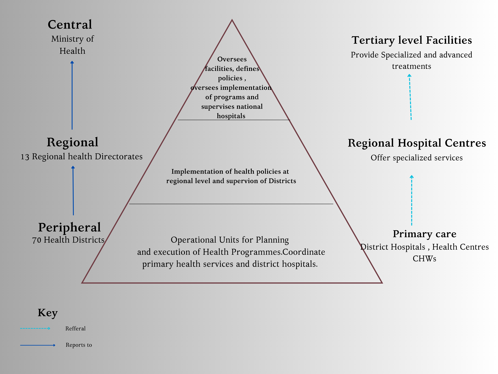
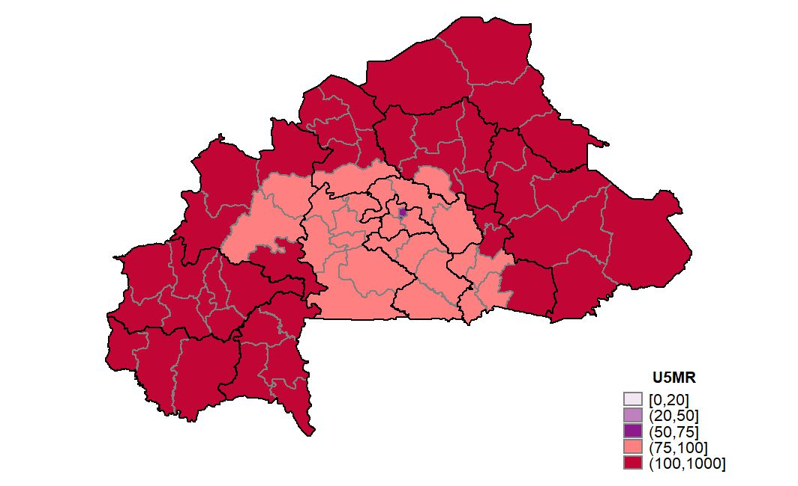
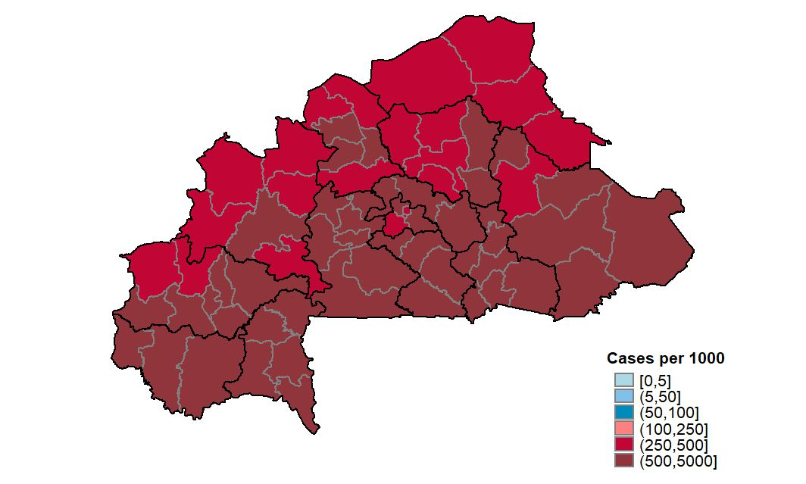
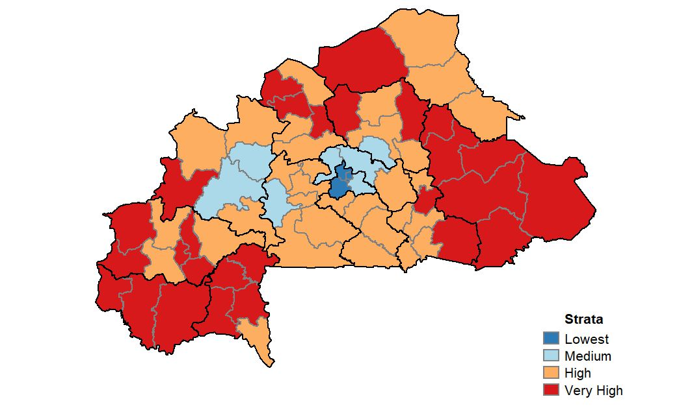
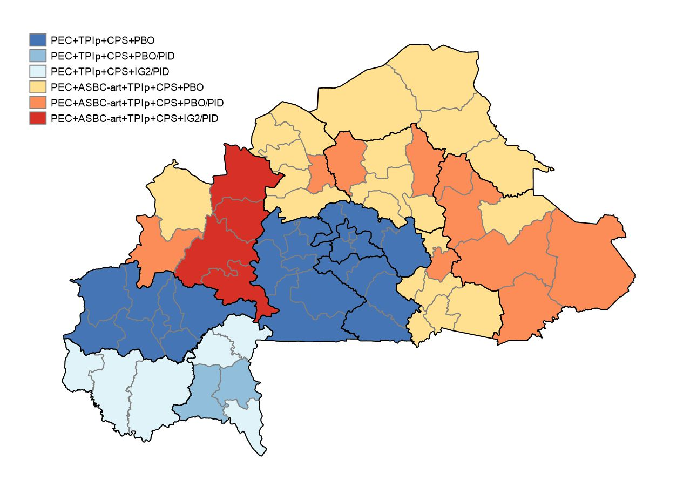

BURKINA FASO MALARIA EPIDEMIOLOGY SUMMARY
Author: Herieth Alexander Last Updated: 17/1/2024
| Metric | Burkina.Faso |
|---|---|
| Population | 23025776.0 |
| Urbanization | 32.5 |
| Median Age | 17.5 |
| Prevalence rate (Pfpr6-59) | 28.0 |
| Incidence (/1000 people) | 353.0 |
| Population at risk | 23025776.0 |
Sources- WORLD BANK , NSP 2021–2025 , DHS Program
MALARIA SITUATION
Burkina Faso along with 10 other nations bear 70 percent of the world’s malaria burden in disease and death. In 2021,it contributed to 3.3% of global malaria cases and 3.4% of global malaria deaths. Malaria incidence increased from 449 cases per 1,000 population in 2015 to 591 per 1,000 in 2018, despite interventions.Transmission has plateaued partly compounded by a rapidly deteriorating security situation in the country where 2 coups happened 9 months apart in 2021 and 2022.
The presence of armed groups isolating and encircling certain areas has led to severe limitation on access to and delivery of basic health services. This is due to closing of health facilities , displacement of people and suspension of partner support and coordination activities in some locations. As of November 2024, 10% of the Burkina Faso population was displaced and 31% of health facilities were not operational leaving approximately 2.5 million individuals with limited access to health care. Sahel , East and Center-East regions were the most affected with over half of their facilities closed. There is a need to improve access to care for internally displaced persons and to ensure continued access to quality care for host communities.

Malaria incidence remains high, reflecting challenges in reducing transmission, with persistent hotspots in districts like Sahel and Cascades.The 2021–2025 National Strategic Plan emphasizes stratified approaches targeting high-burden districts to achieve targeted reductions in both prevalence and incidence.


Deployed Malaria Control Activities
The Permanent Secretariat for Malaria Elimination (Secrétariat permanent pour l’élimination du paludisme) or SP/Palu is the local implementer of malaria control activities with multiple local and international partners . For the 2021-2025 plan ,interventions have been targeted in key areas namely;
- Vector Control
- Insecticide-Treated Nets (ITNs): Mass distribution every three years and continuous distribution through ANC visits, schools, and internally displaced persons (IDPs) camps.
- Insecticide-Treated Spraying (IRS): Ongoing efforts to reduce vector populations.
- Larviciding: Ongoing larviciding to control mosquito larvae in breeding sites.
- Chemoprevention & Vaccine
- Malaria in Pregnancy (IPTp): Providing intermittent preventive treatment (IPTp) to pregnant women with sulfadoxine-pyrimethamine (SP) through ANC visits and by community health workers (CHWs).
- Seasonal Malaria Chemoprevention (SMC): Seasonal malaria chemoprevention for children aged 3 to 59 months, administered in four or five cycles during the rainy season.
- RTS,S Malaria Vaccine: Introduction of the RTS,S malaria vaccine, aiming for high vaccination coverage (80% by 2024, 90% by 2025, 85% by 2026) among children aged 0-12 months in 27 health districts.
- Case Management
- National Malaria Treatment Guidelines: Adoption of dihydroartemisinin-piperaquine (DP) as first-line treatment and artesunate-pyronaridine (ASPY) as second-line treatment.
- Revised Malaria Protocols: Artemether-lumefantrine (AL) as third-line treatment for uncomplicated malaria.
- Health System Strengthening
- Health Supply Chain and Pharmaceutical Management: Improving the availability of malaria commodities, quality control systems, and fighting substandard medical products.
- Surveillance, Monitoring, and Evaluation: Malaria data collection, validation, and analysis through DHIS2 and regular surveillance bulletins to track progress and trends.
- Capacity Strengthening: Enhancing the leadership and management skills of the SP/Palu team and building the capabilities of community health workers (CHWs) for case management and data collection.
- Social and Behavior Change
- Public Awareness and Education: Raising awareness about malaria prevention (ITNs, SMC, IRS, IPTp), care-seeking practices, and symptoms.
- Community Engagement: Engaging at least 90% of community leaders to promote malaria responses and ensure that 80% of the population knows key malaria prevention and care information. This includes advocacy, interpersonal communication, and mass communication campaigns.
| Indicator | 2021 DHS | 2017-18 MIS | 2014 MIS | 2010 DHS | 2003 DHS |
|---|---|---|---|---|---|
| Malaria prevalence according to RDT | 28.0 | 20.2 | 61.4 | 76.1 | NA |
| Malaria prevalence according to microscopy | 14.0 | 16.9 | 45.7 | 65.9 | NA |
| Households with at least one insecticide-treated mosquito net (ITN) | 82.8 | 75.3 | 89.8 | 56.9 | 5.6 |
| Net source: Mass distribution campaign | 82.3 | 84.0 | NA | NA | NA |
| Persons with access to an insecticide-treated mosquito net (ITN) | 64.1 | 54.5 | 71.2 | 36.1 | 2.5 |
| Population who slept under an insecticide-treated mosquito net (ITN) last night | 61.3 | 44.1 | 67.0 | 31.5 | 2.0 |
| Existing insecticide-treated mosquito nets (ITNs) used last night | 90.7 | 76.0 | 85.2 | 79.6 | 83.0 |
| Households with indoor residual spraying (IRS) in last 12 months | NA | NA | 0.4 | 0.9 | NA |
| SP/Fansidar 2+ doses during pregnancy | 79.1 | 82.3 | 48.3 | 38.5 | 0.0 |
| SP/Fansidar 3+ doses during pregnancy | 56.8 | 57.7 | 23.1 | 5.2 | 0.0 |
| Children under 5 with fever in the last two weeks | 22.2 | 20.0 | 40.4 | 20.6 | 36.7 |
| Children with fever for whom advice or treatment was sought, the source was a public sector facility | 93.7 | 96.4 | 87.9 | 80.1 | 64.5 |
| Children with fever for whom advice or treatment was sought, the source was a private sector facility | 2.6 | 2.6 | 7.3 | 5.8 | 9.4 |
| Children who took any ACT | 48.5 | 79.4 | 27.9 | 24.7 | NA |
ADMINISTRATIVE BOUNDARIES
Burkina Faso has 13 regions with three of these being major cities .Administrative Divisions include 13 Regions, 45 Provinces, 351 Communes, and 70 Health Districts.

MALARIA TRANSMISSION DYNAMICS
Burkina Faso is divided into two climatic regions. The Sahelian region forms the northern part highly influenced by the Sahara desert.It is hot and arid and malaria transmission peaks during the rainy season (June-October). The Sudanese zone is found in the southern part with more rainfall exhibits and longer transmission seasons. An intermediate region exists with moderate rainfall and high temperatures. Based on temperature , rainfall and land cover. Burkina Faso can be divided into three regions.

The seasonal peaks are influenced by rainfall(critical for breeding sites.) and temperature (influence vector survival).Elevated transmission lasts up to three months in the north, six months in the center, and nine months in the south. Variation in transmission rates are seen with a median lag-time of 10 weeks between rainfall and increase in number of cases. Despite these environmental variations urban areas tend to experience lower transmission compared to rural areas due to infrastructure differences.Three major river basins (Volta, Niger, and Comoé) influence malaria vector habitats.

Adapted from: spatiotemporal distribution of incidence and environmental drivers, and implications for control strategies
VECTOR PROFILE
The primary vectors are A.gambiae and A . Coluzii . Secondary vectors are A. arabiensis which have beeen observed in the West and South West areas where they were previously absent. A. gambiae is resistant to all pyrethroids and has led to adoption of PBO and G2-intercepor from standard pyrethroid nets. EIR have not been influenced by IRS but are significantly high outdoors influenced by PBO ITNs which were rolled out in 2019.
| Metric | Burkina.Faso |
|---|---|
| Mosquito species | An. gambiae predominates, An. coluzzii An. arabiensis |
| Parasite | Plasmodium falciparum |
| Peak transmission season | May through October |
| Drivers | Rainfall, Political Instability |
| Weather type | Sudanese and Sahelian |
ORGANISATION OF HEALTH SYSTEM AND IMPLEMENTATION OF MALARIA CONTROL EFFORTS
Malaria control strategies and decisions are implemented primarily at the health district level, with coordination from regional health directorates.Each district oversees planning and implementation of malaria interventions, informed by local epidemiology.

There are three hospitals at the tertiary level,eight polyclinics at the secondary level, and 286 health care establishments at the primary level. About 71% of healthcare is offered by public facilities. Private facilities are concentrated in the major cities.
To complement these facilities 593 other health care structures, 243 pharmacies, and 661 pharmaceutical depots are also present with comprehensive community health system, which includes community health workers ,community-based organizations, and other civil society actors involved in the health sector
Community Health Workers (CHWs)
Known as ASBCs (Agents de Santé à Base Communautaire), they are crucial in rural and underserved areas. Responsibilities include Integrated Community Case Management (iCCM) of malaria, diarrhea, and pneumonia in children under five, distributing ITNs, and reporting via community-level structures to the health system. CHWs report directly to local health teams at CSPS and participate in routine health system planning and reviews.Of the 18000 CHW intended to be recruited , currently there are 17648 CHWs where 5595 provide community based case management.

Schema of Health System Reporting
The National Health Information System (SNIS) integrates malaria data into the DHIS2 platform, operational since the mid-2010s.Three tiers exist District , Regional and tertiary hospital data managers who all compile data to ENDOS .Integration of data from the private sector into the national system remains incomplete but is improving.It tracks routine data including suspected cases, confirmed cases by RDT/microscopy, treatment rates, severe cases, and deaths. Malaria incidence and mortality are reported for key groups (under 5 and over 5).
| Metric | Burkina.Faso | Breakdown |
|---|---|---|
| OPD Attendance | YES | Age and Sex |
| Suspected | YES | Age and Sex |
| LLN | YES | NA |
| Completeness | YES | NA |
| IPTs | YES | NA |
| Tested | YES | Age, Sex and test type |
| Cases | YES | Age and Sex |
| Commodities | YES | NA |
| Fevers | YES | Age and Sex |
| Stock outs | YES | NA |
| Deaths | YES | Age and Sex |
MALARIA STRATIFICATION MAPS
Multiple stratification maps exist for Burkina Faso and these have been included in the NSP and MOP to inform decison making as well as visualize plans of rolling out interventions. Stratification was based on malaria burden (parasite prevalence, under-5 mortality rates, and health system capacity) where high-transmission zones included northern regions (Sahel and Nord).The stratification map was revised in line with the HBHI initiative in 2019 and Indicators such as population density, proximity to water bodies, and access to healthcare were incorporated.




REFERENCES
- PMI MOP for more information.
- National Strategic Plan 2020 for more information.
- DHS Country Data for more information.
- RHIS for more information.
- spatiotemporal distribution of incidence and environmental drivers, and implications for control strategies
- End Malaria Global Community Health Dashboard
- HEALTH CLUSTER - BURKINA FASO BULLETIN No. 11 ,November 2024